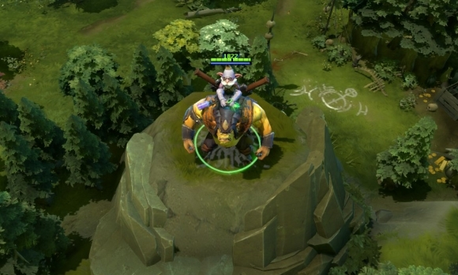

 炼金术士
炼金术士
背景故事
投身神圣的化学事业是黑酿家族的传统，但是年轻的拉泽尔无论是野心、创造力还是执着都可谓是前无古人。然而在他成年以后，他却将家族事业置之不顾，开始试着用炼金术制造黄金。如他大胆的名声所述，有一次他宣布要把一整座山全部变成金子。在浪费了二十年时间进行研究和准备后，他的炼金术在众人面前壮观地失败了，实验造成了大面积的破坏，很快他就被囚禁了。但是拉泽尔可不会向挫折屈服，他一直在寻找机会逃出去继续他的研究。当他的牢房来了一个凶猛的食人魔狱友后，他发现机会来了。说服食人魔不要吃他后，拉泽尔用牢房石地上生长的霉菌和苔藓为原料，仔细地调和着一种药酊，准备给食人魔服下。花了一周不到的时间，药酊似乎完成了。当食人魔喝下药剂后，它突然变得狂怒起来，像个无法阻挡的狂战士般，破坏了监狱的铁栏，冲破了墙壁和狱卒。很快他们就发现自己在城市外围的森林中迷路了，虽然留下了一路破坏的踪迹，但没有追兵的迹象。受到药剂后遗症的作用，食人魔显得很安详、快乐，也更热心了。决定合伙后，这对搭档再次出发去寻找拉泽尔炼金术试验所需要的材料。
| 酸性喷雾 向目标区域喷洒高压酸雾。穿过受污染地带的敌人每秒会受到物理伤害，同时护甲被削弱。 魔法消耗：130/140/15
冷却时间：22.0
|
不稳定化合物 炼金术士调制一瓶不稳定的化合物，投向敌方英雄，对爆炸点周边范围的单位造成伤害并眩晕。调制的时间越久，伤害越大，眩晕时间也越长。调制5秒后达到最大伤害量和最长眩晕时间。然而，如果5.5秒后还不扔出去的话，则会在炼金术士自己手中爆炸。 炼金术士在摇制期间可以像平常一样移动和攻击。 魔法消耗：120
冷却时间：16.0
|
贪魔的贪婪 炼金术士将敌人的尸体和赏金神符转化成额外的金币。炼金术士每杀死一个单位，就能获得基础额外金钱和附加额外金钱。如果炼金术士在接下来30秒内又杀死了一个单位，获得了黄金，那么他所获得的附加额外金钱将有一定幅度的增加。另外，激活赏金神符后将获得3 4 5 6倍金钱。 魔法消耗：0
冷却时间：0
|
化学狂暴 炼金术士诱发他的食人魔同伴进入化学狂暴，降低攻击间隔，提高移动速度和回复能力。 拥有0.35秒的变身时间，可以用来躲避攻击和技能弹道以及眩晕技能。 魔法消耗：50/100/150
冷却时间：45.0
|